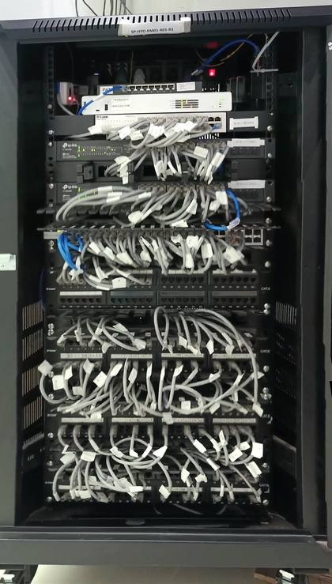
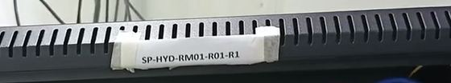

Five screens, each on a laptop and a phone, with the owner's rack SP-HYD-RM01-R01-R1. Static design only: the app has not changed yet.
Two fields and one button. The left half says what RackTrack does.

New here? Ask your admin for an invite.
Film a rack. See every device and what the record got wrong.
New here? Ask your admin for an invite.
One row per rack: when it was last scanned, what it was compared with and its state. Open a rack to see its result.
3 racks, newest scan first
| Rack | Last scan | Compared with | State | |
|---|---|---|---|---|
| SP-HYD-RM01-R01-R1 Hyderabad office | 27 Oct, 12:53 | ServiceNow CMDB | 2 differences | |
| Network rack 1 Hyderabad office | 27 Oct, 12:48 | NetBox | Confirm the rack | |
| NETWORK-RACK-2 Hyderabad office | 27 Oct, 12:44 | NetBox | Confirm the rack |
3 racks, newest scan first
Pick the camera or a video, then one button. The run shows five plain stages instead of fourteen engine steps; the full list is folded.
Film the rack from top to bottom, or upload a video of it.
Film the rack from top to bottom, or upload a video of it.
vdo1.mp4 · about 2 minutes left
You can leave this page. The rack shows on Home when it is ready.
About 2 minutes left
You can leave this page. The rack shows on Home when it is ready.
Four tabs, each its own screen that fits the window. Nothing is repeated across tabs. More on this rack sits at the end of the tab bar on every tab and opens the tools (shown open on Layout). On the phone it is the three dots at the top.
The picture with the unit scale beside it and the counts in one line.
22 units · 14 in use · 8 free · 10 devices
Rack label read in the video
SP-HYD-RM01-R01-R1
One compact table. Tap a row for its details; the two that need a look are amber.
| Unit | Kind | Make and model | Ports | |
|---|---|---|---|---|
| U20 | Router | CTS, model not read | 8 | |
| U19 | Firewall | Make not read | 9 | |
| U18 | Switch | D-Link DGS-1024C | 24 | |
| U17 | Switch | TP-Link TL-SG2428P | 28 | |
| U15 | Switch | TP-Link TL-SG2428P | 28 | |
| U13 | Switch | D-Link DGS-1210-52 | 52 | |
| U10-11 | Patch panel | RJ45 patch panel | 48 | |
| U7-8 | Patch panel | RJ45 patch panel | 48 | |
| U4-5 | Patch panel | RJ45 patch panel | 48 | |
| U1-2 | Patch panel | RJ45 patch panel | 48 |
The drawing of the rack, unit by unit. Here More on this rack is shown open.
Only the report. One button top right, Compare against the database; nothing of the compare shows until it is used. Earlier scans fold at the bottom.
Made from this scan
Three steps after the button: pick the database, confirm the rack, see the differences short. The detail opens in its own panel.
The button opens a choice of three; one must be picked.
Made from this scan
How the rack was identified, step by step, with a confidence each. Tap a step for its proof (the rack label is shown open). Confirm or Change.

The strip above the first unit, where the label is readNothing is written back to the database.
A big number and one line per difference. The rack report and earlier scans stay folded below.
Opens as its own panel: the record and the video side by side, and what to do.
Against SP-HYD-RM01-R01-R1 in ServiceNow CMDB
Against SP-HYD-RM01-R01-R1 in ServiceNow CMDB